Знаходьте будь-яке фото у великій бібліотеці, описавши його, і швидко переглядайте фотографії, зберігаючи найкращі.
PhotoLiker — програма для Windows. Якщо папка — це диск зі старими фото, які вже не перегорнути, PhotoLiker може один раз переглянути
його у фоновому режимі, а далі ви шукаєте по ньому, як в Інтернеті: пишете birthday cake чи children on a stage,
один раз називаєте людину — і знаходите всі фото, де вона є, або поєднуєте одне з одним (Mom playing guitar 2005).
Усе працює на вашому комп’ютері, жодне фото нікуди не завантажується. Див. Пошук фото.
А щоб швидко переглядати фото: ви відкриваєте папку, гортаєте її стрілками на клавіатурі, натискаєте Пробіл, щоб
вподобати фото, або літеру чи цифру, щоб розкласти фото по групах. Вподобання — це звичайні копії фото
в іншій папці: нічого не ховається в базі даних, а ваші оригінали ніколи не змінюються.
Запустіть PhotoLiker-Setup. Програма встановлюється лише для вас і не просить прав адміністратора. Якщо .NET Runtime немає, установник
повідомить про це і може відкрити сторінку завантаження.
Запустіть Photo Liker з меню «Пуск» (установник може також додати значок на робочий стіл). Програма відкриває папку, з якою ви працювали востаннє;
вперше натисніть кнопку Open на панелі інструментів і виберіть папку з фото.
За бажанням один раз натисніть Register Context Menu на панелі інструментів. Відтепер у Провіднику Windows можна клацнути правою кнопкою на будь-якій папці
й вибрати Open in Photo Liker. Та сама кнопка прибирає цей пункт.
Видалення програми прибирає її та цей пункт меню. Ваші фото, вподобання і налаштування залишаються недоторканими.
2. Пошук фото
Пошук — головна можливість PhotoLiker. Для бібліотеки з тисяч старих фото на диску чи NAS PhotoLiker може один раз переглянути кожне фото, а потім відповідати на запитання про них.
Нічого не завантажується в Інтернет: аналіз іде на цьому комп’ютері, а ваші фото лише читаються й ніколи не змінюються.
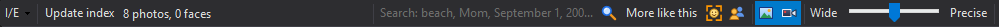
Index photos (у смузі над фото) аналізує папку та її підпапки у фоновому режимі, показує смугу прогресу й оцінку часу, що лишився. Можна далі переглядати фото, зупинити
(кнопка стане Stop indexing) і продовжити пізніше: повторно обробляються лише нові чи змінені фото. Пошук працює, щойно в індекс потрапили перші фото. Вперше програма запитає дозволу,
перш ніж завантажувати моделі ШІ (близько 900 МБ для стандартної моделі пошуку).
Шукайте, описуючи те, що потрібно: children on a stage, snow, a dog, autumn leaves. Впишіть це в поле пошуку і натисніть
Enter або клацніть на лупі. Результати замінюють папку у вікні перегляду: переглядайте, вподобайте і розкладайте їх по групах, як будь-які фото. Esc або
Close results повертає назад. More like this знаходить фото, схожі на показане. Описи пишіть англійською (інша модель, див. Модель нижче, розуміє й інші мови). Фото, яке є в бібліотеці кілька разів, показується один раз.
Дати. Впишіть дату в поле пошуку, окремо або разом з іншими словами: September 1 (цей день у кожному році), September 2009, 2009-09-01,
2009, 2009-2011, beach September 2009, Mom 2005, Mom playing guitar 2005. Назви місяців — англійською. Заголовок вікна каже, як дату було розпізнано.
Обличчя. Ввімкніть значок облич (остання кнопка смуги), щоб побачити обличчя, знайдені на показаному фото. Клацніть на обличчі, щоб сказати, хто це (New person… або вже названа людина),
щоб знайти всі фото цієї людини або видалити хибне обличчя (лялька, плакат). Якщо вписати ім’я людини в поле пошуку, знайдуться її фото. Ім’я можна поєднати зі словами, датою чи іншими іменами, в будь-якому місці тексту:
Yurii playing guitar знаходить фото Yurii, що підходять до слів, Mom and Dad on the beach 2009 — фото, на яких є обоє, зроблені 2009 року, що підходять до слів.
Хто на фото, визначається за обличчями, тож це працює з будь-якою моделлю; слова зіставляє вибрана модель. Текст у подвійних лапках — це лише слова. Жовта пунктирна рамка з іменем і знаком питання — припущення
(looks like Mom): клацніть на ній, щоб підтвердити. Щоб позначити обличчя, яке програма пропустила, утримуйте Shift і обведіть його рамкою.
Імена, які ви даєте в одній папці, відомі й в інших.
Люди й групи. Коли названо багато людей, розкладіть їх по групах (Родина, Друзі, Робота…), щоб їх було легко знайти. Кнопка People (дві голови, поруч зі значком облич) відкриває вікно
People and groups: люди, яких ви назвали, з кількістю названих облич і групами, до яких кожен належить. Виберіть одну людину або кілька (Ctrl+A вибирає всіх;
Shift+клац чи Ctrl+клац вибирає кількох) і праворуч позначте групи, до яких вони належать: наполовину заповнений квадратик означає, що лише частина вибраних людей є в групі, а клац додає
всіх. Людина може бути в кількох групах. New group… створює групу й одразу кладе до неї вибраних людей; Show залишає в списку одну групу або людей, яких немає в жодній;
Rename group… і Delete group стосуються тієї групи, що показана (видалення групи не видаляє її людей). Клац на заголовку стовпчика сортує список: за Faces першими йдуть імена
з найменшою кількістю названих облич. Кожна зміна зберігається одразу.
Rename person… (також F2 у списку й Rename … у меню обличчя) дає вибраній людині інше ім’я всюди: у цій папці, в інших папках (кожна підхоплює його, коли її
відкривають) і в групах. Ім’я, яке вже має інша людина, робить із двох одну людину: вас спершу питають, усі їхні обличчя стають обличчями тієї, що була, з її написанням, а в групах вона
одна. Так можна виправити й ім’я, яке вписали двома способами.
Delete person… (також клавіша Delete у списку) видаляє вибраних людей, одну чи багато, після запитання (за замовчуванням відповідь «Ні»): кожне обличчя з таким іменем втрачає ім’я, у цій папці
та в інших папках (кожна підхоплює це, коли її відкривають), а самі люди зникають з усіх груп (групи лишаються). Зникають лише імена: фото й обличчя, знайдені на них, не чіпаються, а людина повертається, якщо назвати обличчя знову.
Export… і Import… (внизу вікна) переносять людей і групи на інший комп’ютер або в резервну копію через один файл .plpeople.
Export… записує кожну людину з обличчями, які ви назвали (цієї та інших папок), і кожну групу. Import… спершу каже, що є у файлі, а після вашої згоди
додає його: обличчя, яке тут уже назване, зберігає ім’я, група, яка у вас є, отримує людей, яких у ній не було, групу, якої немає, буде створено, і нічого не видаляється — тож повторний імпорт
того самого файлу нічого не змінює. Частина файлу, що походить із цієї самої папки (той самий шлях), стає іменами цієї папки; частини інших папок зберігаються як приклади того, як виглядають ці люди,
а папка, яку ви відкриєте пізніше й яка має власний файл людей, ставить свої імена замість своєї частини, як завжди. Групу з ім’ям людини, яка тут є, і людину з назвою групи, яка тут є, пропускають,
і повідомлення про це каже. Файл, створений іншими моделями облич, ніж у цій версії, дає лише групи.
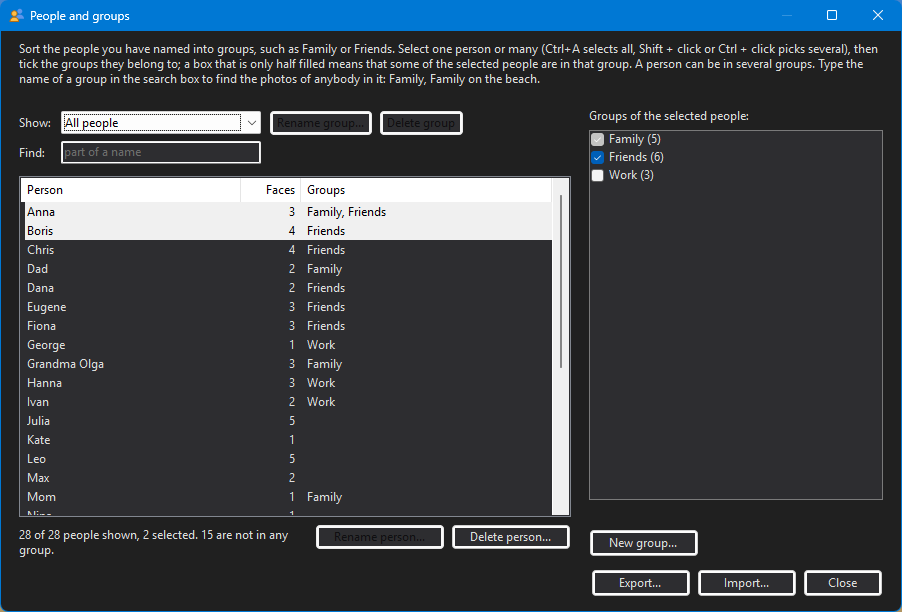
Вибрано двох людей: у групі Friends є обоє, у Family лише один (наполовину заповнений квадратик).
Групи стають у пригоді в трьох місцях. Меню обличчя показує кожну групу за назвою з її людьми в підменю, потім людей, яких немає в жодній групі, а вгорі — людину, на яку схоже обличчя.
New person… питає й про групу: вона починається з тієї, яку ви вибрали востаннє, а нова назва створює нову групу. А назва групи в полі пошуку знаходить фото будь-кого з неї:
Family, Family on the beach 2009, Family and Yurii (Yurii разом із кимось із родини). Група не може мати ім’я людини. Групи однакові в усіх папках, а папка, у якій названо людей, зберігає їхню копію поруч із фото.
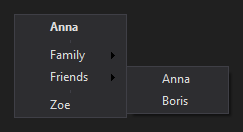
Меню обличчя: вгорі ймовірна людина, групи з їхніми людьми в підменю, потім людина без групи.
Точність. Повзунок праворуч у смузі (від Wide до Precise) задає, наскільки суворий пошук: ліворуч він пропускає більше фото (вільніший збіг),
праворуч менше (точніший збіг), посередині — звичайний режим. Він діє на пошук за описом, на More like this і на пошук фото людини. Коли рухаєте повзунок, останній пошук повторюється
одразу, тож можна розширити пошук, який знайшов замало, або звузити той, що знайшов забагато. Наведіть на повзунок мишу, щоб побачити числа. Кожна папка має своє положення
(SearchPrecision у її файлі photo-liker-config.json).
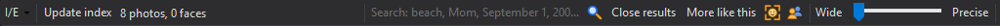
Повзунок на Wide: більше фото, вільніший збіг.
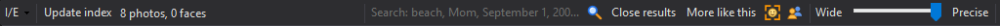
Той самий пошук на Precise: менше фото, точніший збіг.
Модель. Список праворуч у смузі вибирає модель, що зіставляє слова з фото; кожен рядок списку містить назву, виробника в дужках і мови, які модель розуміє. Кожна папка запам’ятовує свій вибір
(SearchModel у її файлі photo-liker-config.json). Числа — з перевірки на 300 фото та їхніх 1 500 описах: як часто потрібне фото було першим серед результатів
і серед перших десяти.
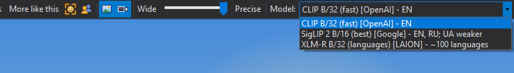
Список моделей.
Модель
Перше
Серед перших 10
Швидкість моделі
Завантаження
Розуміє
CLIP B/32 (OpenAI)
74 %
97 %
21 фото/с
610 МБ
англійську
SigLIP 2 B/16 (Google)
88 %
99,5 %
5 фото/с
1,5 ГБ
англійську й російську добре, українську гірше
XLM-R B/32 (LAION)
78 %
97,5 %
16 фото/с
1,5 ГБ
близько ста мов, зокрема українську й російську
CLIP B/32 — стандартна: найшвидша й найменша для завантаження. SigLIP 2 знаходить потрібне фото найчастіше, але індексує приблизно вчетверо довше. XLM-R така ж швидка, як CLIP,
трохи краща англійською і саме вона підходить для описів українською чи російською. (Швидкість — лише модель фото; справжній запуск залежить ще й від швидкості читання фото.)
Кожна модель має один раз пройти по фото: це робить Update index, і лише це: обличчя, імена людей і дати лишаються, так само як і результати моделей, якими ви користувалися раніше, тож повернення до однієї з них нічого не коштує.
Смуга показує, як далеко це зайшло (3 000 of 12 345 photos for SigLIP 2 B/16); доки не готово, опис і More like this бачать лише готові фото, а дати й люди працюють з усіма.
Поки фото аналізуються, список заблоковано. Коли модель використовується вперше, програма питає дозволу, перш ніж її завантажити.
Корисно знати
Швидкість. На 6-ядерному настільному процесорі індексація обробляє приблизно три фото за секунду (20 000 фото — приблизно дві години). Мережевий диск може бути повільнішим.
Відеокарта не потрібна.
Дати фото. Дата береться з камери (EXIF). Якщо її немає або їй не можна вірити (раніше 1900 року, у майбутньому, або камера втратила годинник), використовується дата створення файлу,
а рядок стану повідомляє, скільки результатів датовано так.
Інший комп’ютер. Скористайтеся I/E > Export index… (перша кнопка смуги), щоб зберегти індекс у файл, і I/E > Import index… на іншому комп’ютері. Якщо відео вже проаналізовано, той самий файл несе й їх (моменти, обличчя і прочитане мовлення), а імпорт замінює
відео, проаналізовані для цієї папки; файл, зроблений без відео, залишає їх як є. Потім натисніть Оновити індекс: програма запропонує завантажити там модель пошуку (навіть якщо всі фото вже є в імпортованому індексі), бо пошук за описом потребує її.
Visual C++ runtime. Моделям ШІ потрібен актуальний Microsoft Visual C++ runtime. Він надходить з оновленнями Windows; якщо завантаження моделей зупиняється з повідомленням про це,
встановіть Visual C++ Redistributable (x64).
3. Перші кроки
Відкрийте папку з фото. Показується перше фото, а праворуч — стрічка маленьких картинок (мініатюр).
Натисніть → (стрілка вправо), щоб побачити наступне фото.
Натисніть Пробіл, щоб вподобати фото. Його буде скопійовано в папку Liked, а на фото з’явиться зелена позначка.
Натисніть Пробіл ще раз — копію буде видалено.
Натисніть ← (стрілка вліво), щоб повернутися назад.
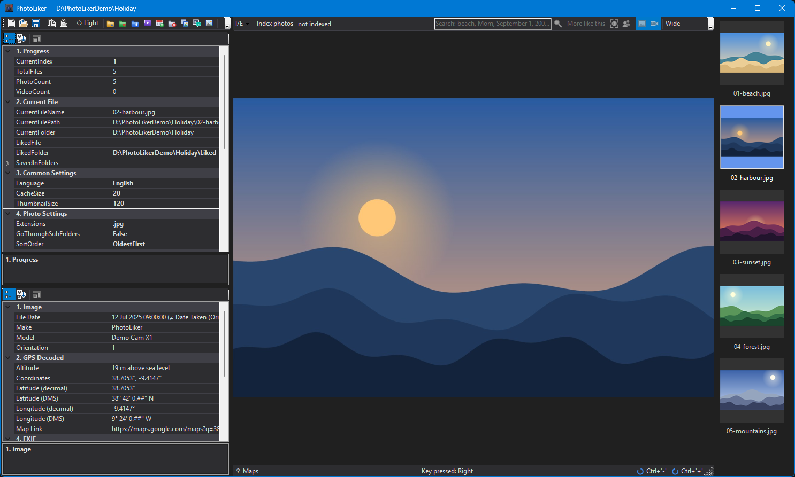
→: наступне фото.
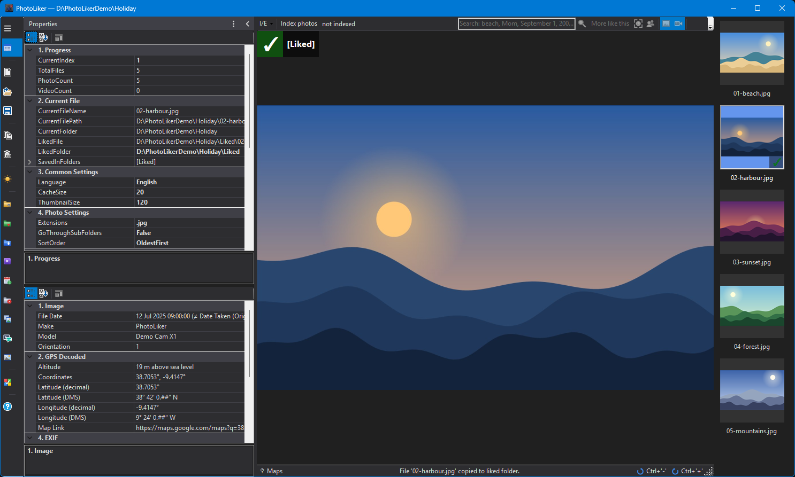
Пробіл: фото вподобано. Воно отримує зелену позначку — у вікні перегляду і на мініатюрі.
Клавіші працюють лише на фото. Коли ви вводите текст у полі (поле пошуку або значення в таблиці налаштувань), клавіші належать цьому полю.
Клацніть на фото, на мініатюрі або на порожньому місці навколо фото — і клавіші знову керують фото.
Таблиця налаштувань (ліворуч): де ви зараз (CurrentIndex, TotalFiles), поточний файл і налаштування папки.
Виберіть рядок — і в панелі під таблицею з’явиться його опис.
Дані про фото (внизу ліворуч): те, що камера записала у фото, див. EXIF і GPS.
Смуга пошуку (над фото): індексація і пошук, див. Пошук фото.
Фото (посередині). Зелена позначка в лівому верхньому куті означає, що фото вподобано або додано до групи; поруч із нею перелічено папки,
де воно збережено. У лівому нижньому куті — перелік ваших груп.
Мініатюри (праворуч). Клацніть на одну, щоб перейти до цього фото.
Рядок стану (внизу): що програма щойно зробила. Праворуч у ньому є посилання Maps (якщо у фото є місце зйомки)
і кнопка Rotate.
Кнопка на панелі завдань: поки щось триває довго (індексація фото, діалоги дат, дублікатів, порожніх папок і відео, збереження
результатів пошуку в групі, завантаження нової версії), під значком PhotoLiker заповнюється зелена смужка — так, як коли браузер завантажує файл, —
тож за процесом можна стежити, навіть коли вікно згорнуто. Смужка, що бігає туди й сюди, означає, що кінець поки невідомий.
5. Клавіатура і миша
Дія
Що відбувається
→ / ←
Наступне / попереднє фото. Клацання на мініатюрі переходить до неї.
Home / End
Перше / останнє фото списку (або результатів пошуку, поки їх показано).
PageDown / PageUp
Перше фото наступного / попереднього місяця. Рядок стану називає місяць.
Пробіл
Вподобати фото (скопіювати в папку Liked) або знову прибрати копію.
Delete
Перемістити фото в папку Deleted і показати наступне (див. Видалення фото).
1–9, A–Z
Зберегти фото в групі або знову прибрати з неї (див. Вподобання і групи).
Alt+1–9, Alt+A–Z
Поки показано результати пошуку: зберегти усі їх у групі — після того, як програма скаже, скільки це фото, і запитає підтвердження.
0
Вмістити фото у вікно перегляду (після збільшення).
Alt+Enter
Показати фото зі списку як показ слайдів на весь екран, починаючи з показаного фото. У ньому будь-яка клавіша, крім Esc, ставить показ на паузу, а Пробіл продовжує його, F / N вмикають і вимикають обличчя / імена людей, → / ← показують сусіднє з показаного фото, ↓ / ↑ обирають наступний / попередній ефект, а Esc (або знову Alt+Enter) повертає до вікна.
Скопіювати фото в буфер обміну як файл і як картинку: вставте його в Провідник або месенджер.
Ctrl++ / Ctrl+-
Повернути фото на чверть оберту за / проти годинникової стрілки й зберегти (див. Поворот фото).
Ctrl+D
Змінити дату показаного файлу в невеликому вікні: Date Taken (Original) фото JPEG (дати його файлу змінюються разом із нею) або Recorded відео (дата записується у відео, дати його файлу змінюються разом із нею). Це те саме вікно й те саме збереження, що й ... цього рядка в таблиці метаданих. Файл іншого типу не має дати, яку тут можна змінити, і рядок стану про це повідомить. Не в показі слайдів.
Ctrl+колесо миші
Над фото: збільшення, далі перетягуйте картинку. Над мініатюрами: зміна їхнього розміру.
Enter
На відео: відтворити його або поставити на паузу / відновити (див. Відео в теці). Клацання по постеру запускає відео, клацання по картинці під час відтворення ставить на паузу.
Shift+→ / ←, Ctrl+→ / ←
Під час відтворення відео: на 5 секунд / на 30 секунд уперед або назад.
Ctrl+↑ / ↓
Під час відтворення відео: гучніше / тихіше.
. / ,
На відео: наступне / попереднє місце, знайдене в ньому пошуком (без пошуку — наступний / попередній момент), і відтворення звідти.
Ctrl+S
На відео: зберегти кадр, який воно показує, як фото в теці Liked, з датою, коли його там записано.
Esc
Закрити результати пошуку; у показі слайдів — повернутися.
Enter у полі пошуку
Шукати.
Shift+перетягування над фото
Позначити обличчя, яке програма пропустила (коли ввімкнено значок облич).
Такий самий перелік є у вікні About (кнопка Help).
6. Панель інструментів
Open: вибрати папку з фото.
Copy: скопіювати показане фото в буфер обміну (те саме, що Ctrl+C).
Open Source Folder і Open Liked Folder: показати в Провіднику папку з фото або папку Liked.
Load Liked Folder: відкрити папку Liked як окрему папку з фото, щоб подивитися на вибране.
Generate Video: створити відео з фото, див. Створення відео.
Align dates, Remove empty folders, Find duplicates: див. Наведення ладу.
Video speech (кадр відео з хмаринкою мовлення; є, поки ввімкнено SupportVideo): таблиця того, що кажуть у відео теки, див. Таблиця мовлення.
Colorize (фото, сіре в одному куті й кольорове в іншому): додає кольори чорно-білим фото, див. Розфарбування.
Register Context Menu / Unregister Context Menu: додати або прибрати пункт Open in Photo Liker у контекстному меню папок.
Help (знак питання): вікно About з клавішами і цим посібником.
7. Вподобання і групи
Окрім вподобання, фото можна розкладати по групах: родина, подорожі, фото для друку — як вам зручно. Натисніть клавішу
1–9 або A–Z (без Ctrl, Alt і Shift) — і копію фото буде збережено в папці
A - Group, 3 - Group тощо всередині папки Liked. Папка створюється, коли вона вперше потрібна. Натисніть ту саму клавішу ще раз — і копію буде прибрано.
Вподобання пробілом окреме: фото може бути вподобаним і водночас у скількох завгодно групах.
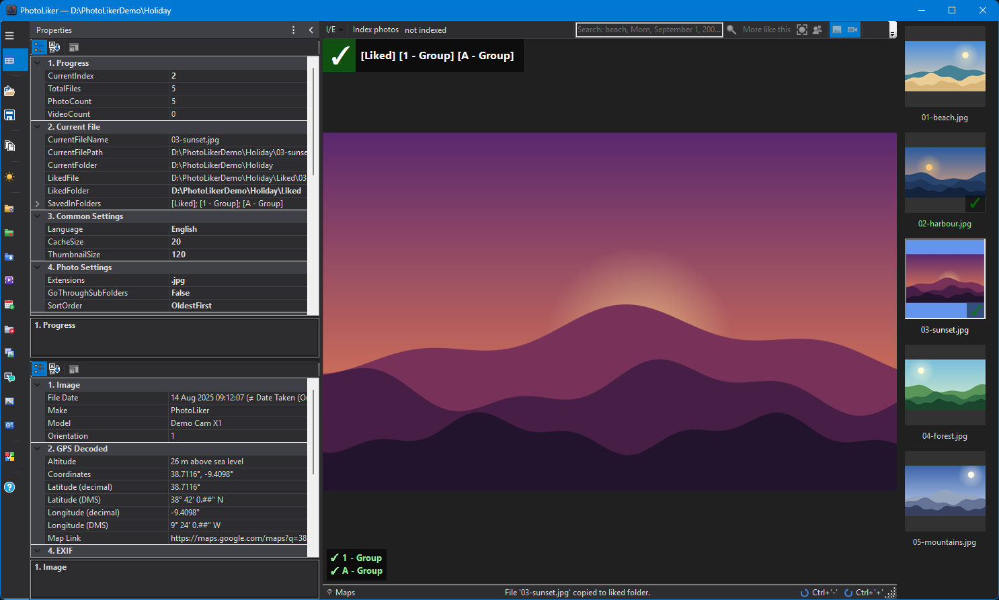
Фото, яке вподобано і яке є в групах 1 та A. Папки перелічено поруч із зеленою позначкою, а легенда в лівому нижньому куті
показує, яка клавіша куди зберігає.
Назвіть свої групи. Перейменуйте папку групи в Провіднику, якщо нова назва й далі починається з тієї самої клавіші та - Group:
A - Group Family відтоді використовується для A. Легенда показує ці назви.
Де збережено це фото? Рядок SavedInFolders таблиці налаштувань перелічує всі папки, де є копія показаного фото.
Усі результати пошуку одразу. Поки показано результати, Alt+A (або будь-яка клавіша групи) зберігає кожне з них у групі.
Нічого не копіюється, доки ви не погодитеся: вікно повідомляє, скільки це фото і скільки МБ. Копіювання показує смуга прогресу, а Cancel його зупиняє.
Якщо в групи ще немає папки, її буде названо за пошуком, наприклад A - Group children on a stage. Так лише додаються копії, жодну не видаляють.
Назви копій. У назві копії є короткий код, IMG_0001 [3f9a1c2e].jpg, щоб фото з різних папок, які мають однакові імена файлів
(кожна камера має власний IMG_0001.jpg), ніколи не перезаписували копії одне одного.
0 — не група: ця клавіша вміщує фото у вікно перегляду.
8. Видалення фото
Delete переміщує показане фото в папку Deleted всередині папки з фото і показує наступне.
Нічого не стирається. Фото зберігає своє місце всередині папки (314CANON\IMG_0001.jpg потрапляє в
Deleted\314CANON\IMG_0001.jpg). Щоб повернути фото, перемістіть його з Deleted у Провіднику; наступного разу, коли папку буде переглянуто,
воно знову буде в списку. Щоб побачити, що там лежить, відкрийте папку Deleted кнопкою відкриття папки.
Папку Deleted пропускають під час складання списку фото, а індекс пошуку її не переглядає. Копії фото в папках Liked і груп залишаються на місці. Видалене відео також зникає з каталогу відео разом із його моментами та мовленням.
9. Поворот фото
Дві кнопки Rotate у правому куті рядка стану повертають показане фото на чверть оберту проти (перша) або за (остання) годинникової стрілки і зберігають це у файлі;
те саме роблять Ctrl+- і Ctrl++ (на кожній кнопці написано її клавіші, а якщо навести вказівник — з'явиться підказка). Натисніть знову — і буде ще чверть. Вона працює з файлами JPEG (.jpg, .jpeg); для файлів іншого типу рядок стану повідомить про це,
і нічого не буде записано.
Нічого не втрачається. Картинка не декодується і не записується заново; змінюється лише примітка у файлі, яка підказує
кожній програмі перегляду (цій програмі, Windows, телефонам, браузерам), як повернути картинку. Повертати можна скільки завгодно разів.
Date Taken (Original) фото і дати його файлу (створення і зміни) стають одним моментом: датою зйомки, яку камера записала у фото, як і в Align dates;
фото без правдоподібної дати отримує дату свого файлу, записану в нього як дата зйомки. Рядок стану повідомить, якщо диск не зберіг дату.
Копії фото в папках Liked і груп не повертаються: це фото у тому вигляді, в якому воно було, коли ви його вподобали. Вони
отримують нові дати фото, тож і далі показуються як його копії.
10. Показ слайдів
Натисніть Alt+Enter — і фото зі списку підуть одне за одним на весь екран або на всі монітори, на кожному своє (див. Monitors
нижче), починаючи з того, на яке ви дивитеся (поки показано результати пошуку, списком є результати). Кожне фото займає стільки місця, скільки дозволяє екран, навколо — чорне поле.
Esc (або знову Alt+Enter) повертає до вікна, до того фото, на якому показ зупинився.
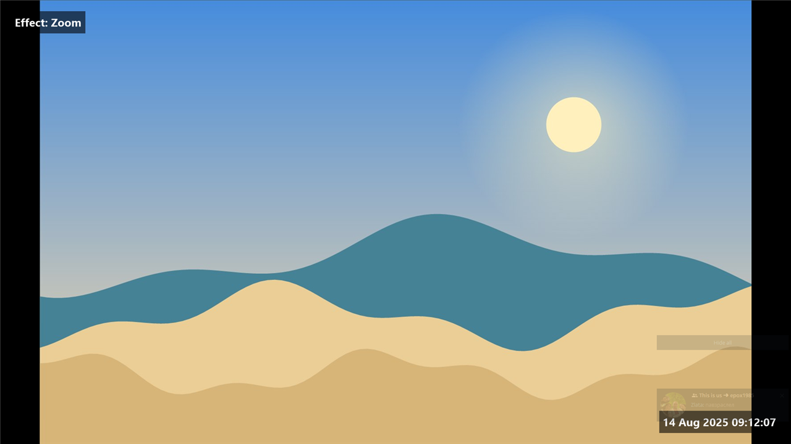
Показ слайдів: фото займає стільки місця, скільки дозволяє екран, у правому нижньому куті — дата зйомки, а в лівому верхньому на мить з’являється назва ефекту, який щойно обрала ↓.
Будь-яка інша клавіша ставить показ на паузу, а Пробіл продовжує його. Поки він на паузі, нічого не змінюється саме (відео, що грає, зупиняється), а
у верхньому правому куті написано Пауза (Пробіл — продовжити). → / ← усе ще показують наступне / попереднє фото, і показ лишається на паузі.
Самі лише Shift, Ctrl і Alt паузи не вмикають.
Медіаклавіші та пульти дистанційного керування. На клавіатурі з медіаклавішами або на пульті, як-от від Windows Media Center, Play продовжує показ, що стоїть на паузі
(показ, що йде, лишається як є), Pause ставить його на паузу, а єдина кнопка Play/Pause робить те саме, що й Пробіл. Гучність +, Гучність −
та Вимкнення звуку показ на паузу не ставлять: їх залишено Windows, тож звук змінюється, а фото йдуть далі.
Комп'ютер не засинає. Поки йде показ (на паузі чи ні), не запускається заставка, дисплей не вимикається і комп'ютер не переходить у режим сну
через те, що ніхто не торкався клавіатури. Коли показ завершується, Windows усе це отримує назад.
Індексація за показом. Якщо папка індексується, поки йде показ, невелика смужка вгорі посередині кожного монітора показує, як далеко вона
(Індексація: 1 234 / 16 000 (7%), залишилось 5 хв, із зеленою лінією, що заповнюється). Коли індексація завершується, смужка зникає, а у верхньому лівому куті на мить з'являється Індексацію завершено.
F вмикає й вимикає обличчя людей (квадрат з іменем на кожному відомому обличчі), а N — їхні імена (один рядок у лівому нижньому куті).
Це два окремі перемикачі. Кожне натискання пише Обличчя: увімкнено, Імена: вимкнено тощо у верхньому лівому куті, а показ ставиться на паузу, як і від будь-якої іншої клавіші. Для цього
папка має бути проіндексована для пошуку, а люди — названі. Як вони були залишені, коли показ закінчився, так їх потім показують рядки PeopleFaces і PeopleNames.
C вмикає й вимикає субтитри відео (рядок ShowCaptions): відео, що грає, одразу отримує або втрачає субтитри. Кожне натискання пише Субтитри: увімкнено або
Субтитри: вимкнено у верхньому лівому куті, а показ ставиться на паузу, як і від будь-якої іншої клавіші. Якщо у показі немає відео, клавіша каже, що субтитрувати нічого. Як клавіша залишила субтитри, коли показ закінчився, так їх потім показує рядок.
→ / ← показують фото, сусіднє з тим, що на екрані, також у випадковому режимі (там навмання вибирає
лише таймер), і це фото знову отримує весь свій час. Після останнього фото йде перше, а перед першим — останнє.
Утримуйте клавішу, щоб гортати швидко. Фото навколо того, що на екрані, готуються заздалегідь, у розмірі вашого екрана,
а у випадковому режимі — ще й наступні, які вибере таймер, тож показ встигає за клавіатурою.
↓ / ↑ обирають наступний / попередній ефект, поки триває показ (у порядку випадного списку рядка Effect, по колу). Його назву
написано в лівому верхньому куті приблизно дві секунди, і наступна зміна фото відбувається за ним. Ефект, на якому ви зупинилися, стає налаштуванням.
Фото, яке не вдається прочитати, пропускається.
Одинадцять налаштувань — у групі 6. Slideshow таблиці налаштувань, і вони зберігаються для папки:
Налаштування
Значення
Mode
Random (за замовчуванням): після часу одного фото — інше фото зі списку, кожне по разу, перш ніж якесь повернеться. OneByOne: наступне фото списку.
Monitors
Current (за замовчуванням): екран, на якому PhotoLiker. All: усі підключені монітори, кожен зі своїм фото, ніколи те саме фото на двох моніторах, і всі вони змінюються разом. У режимі Random кожен монітор бере наступне фото випадкового порядку; в OneByOne монітори зліва направо показують фото, що йдуть одне за одним (фото, на яке ви дивилися, лишається на моніторі вікна), і наступний набір починається там, де закінчився цей. → / ← переводять кожен монітор до сусіднього фото. Якщо моніторів більше, ніж фото, найвіддаленіші від вікна не використовуються.
Timeout
Скільки секунд фото лишається на екрані: за замовчуванням 2, не менше 0,2. Час відлічується від появи фото на екрані.
Watermark
Що написано в правому нижньому куті: DateTime (за замовчуванням) — день і час зйомки фото, Year — рік, або None. Це дата, яку камера записала у фото, якщо їй можна вірити, інакше — дата файлу. Фото без дати лишається без напису.
PeopleFaces
False (за замовчуванням): без квадратів. True: квадрат навколо обличчя кожної відомої людини з іменем над ним, як вікно показує обличчя: зелений для обличчя, яке ви назвали самі, золотий пунктирний зі знаком ? після імені для обличчя, що лише схоже на цю людину. Обличчя, яких ніхто не знає, квадрата не мають. Береться з облич, які знайшов пошук, тож папка має бути проіндексована, а люди — названі (кнопка «Обличчя»). Клавіша F вмикає й вимикає його під час показу. Квадрати рухаються разом з фото в усіх ефектах і майже нічого не коштують.
PeopleNames
False (за замовчуванням): без імен. True: імена людей одним рядком у лівому нижньому куті, зліва направо, як вони стоять (Анна, Олег?, Мама). Клавіша N вмикає й вимикає його під час показу. Від PeopleFaces не залежить.
Effect
Як одне фото займає місце попереднього. Fade (за замовчуванням): старе фото розчиняється в новому. Slide: нове фото виштовхує старе вліво. Zoom: нове фото виростає з меншого розміру, проявляючись. KenBurns: кожне фото повільно зсувається й наближається (або віддаляється) весь час, поки воно на екрані, і розчиняється в наступному. Parallax: кожне фото — маленька сцена з глибиною, і поки воно показане, «камера» зсувається вбік, тож близькі частини рухаються відносно далеких, див. Паралакс за глибиною. Random: одне з перших чотирьох для кожної зміни (не Parallax), ніколи двічі поспіль те саме. None: наступне фото з’являється одразу. Зміна триває не довше 0,8 секунди і не більше 40% від Timeout. → / ← ставлять наступне фото одразу, без зміни (з KenBurns і Parallax воно все одно рухається).
UseVideo
False (за замовчуванням): лише фото. True: відео зі списку теж відтворюються, між фото (відео є в списку, поки ввімкнено SupportVideo).
MuteVideo
True: відео відтворюються без звуку.
VideoPart
OnlyFoundTimeFrames (за замовчуванням): лише місця, які знайшов у відео пошук, по 6 секунд навколо кожного (2 до і 4 після); відео папки, де нічого не шукали, відтворюється повністю. FullVideo: усе відео.
LowerOtherAudio
Поки відео відтворюється зі звуком, звук інших програм притишується на стільки відсотків і повертається після: за замовчуванням 50, 0 лишає його як є, 100 вимикає. Не діє з MuteVideo.
ShowCaptions
True: те, що сказано у відео (мовлення, яке прочитав індекс, див. VideoSpeech), пишеться поверх картинки субтитрами, поки воно грає, також з MuteVideo. False (за замовчуванням). Відео, мовлення якого не прочитано, субтитрів не має. Клавіша C вмикає й вимикає його під час показу.
Паралакс за глибиною
Коли Effect дорівнює Parallax, кожне фото рухається так, ніби камера йде вбік уздовж нього: близькі частини фото (обличчя, квітка) рухаються відносно далеких
(пагорби, стіна), ніби це справжній простір. Модель, що працює на вашому комп’ютері, визначає, наскільки близько кожна частина. Коли вона вперше потрібна, PhotoLiker питає, чи завантажити її
(99 МБ, один раз); поки її немає, фото рухаються звичайно (як у KenBurns), а клавіші ↓ / ↑ цей ефект пропускають. Для кожного фото це близько півсекунди
роботи, яку зроблено наперед, тож показ не чекає. Random його не вибирає. Позначка Depth parallax у розділі Створення відео робить те саме для відео.
Відео в показі слайдів
Коли ввімкнено UseVideo, відео зі списку (папки або результатів пошуку) беруть участь у показі. Фото йдуть як раніше, а відео відтворюється між ними, і лише на екрані,
де відкрито PhotoLiker: з кількома моніторами решта показує фото, поки відео грає. По черзі відео грає там, де лежить у списку; випадково відео трапляються так часто, як їх серед елементів. З OnlyFoundTimeFrames
і показаними результатами пошуку відтворюються лише знайдені місця (2 секунди до і 4 після кожного). Right і Left пропускають відео. Поки відео грає зі звуком, звук інших програм притишується
на LowerOtherAudio відсотків і повертається після. З увімкненим ShowCaptions слова з відео пишуться внизу екрана, поки їх вимовляють (білим на чорному, до чотирьох рядків).
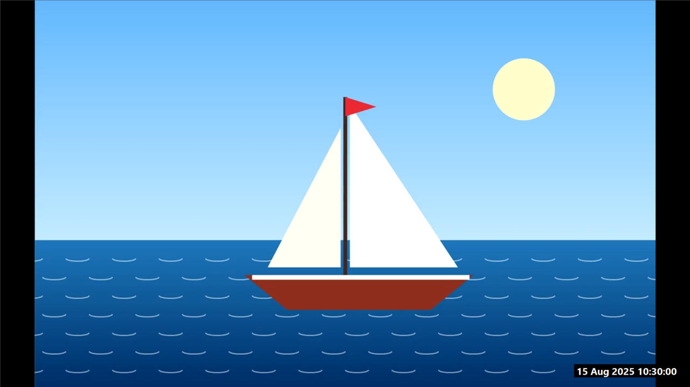
Відео в показі слайдів: воно грає на весь екран, а дата його запису стоїть у кутку, як дата фото.
11. Налаштування
Таблиця налаштувань угорі ліворуч показує прогрес, поточний файл і налаштування папки. Кожен рядок має опис: виберіть його — і панель під таблицею
пояснить, для чого він.
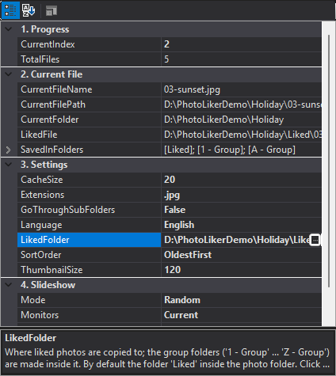
Таблиця налаштувань, вибрано рядок LikedFolder.
Рядки поділено на шість груп: 1. Progress, 2. Current File, 3. Common Settings, 4. Photo Settings, 5. Video Settings і 6. Slideshow.
2. Current File (показане фото; усі рядки лише для читання, крім одного):
Налаштування
Значення
LikedFolder
Куди копіюються вподобані фото. За замовчуванням — папка Liked всередині папки з фото. Кнопка … відкриває вибір папки.
3. Common Settings (уся програма, і фото, і відео):
Налаштування
Значення
Language
Мова програми: English або Українська. Див. Мова програми.
CacheSize
Скільки фото з кожного боку від показаного тримається готовими в пам’яті, щоб стрілки спрацьовували миттєво.
ThumbnailSize
Розмір мініатюр у пікселях. Його змінює Ctrl+колесо миші над мініатюрами.
4. Photo Settings (які файли показуються і в якому порядку):
Налаштування
Значення
GoThroughSubFolders
Показувати також фото з підпапок (за замовчуванням увімкнено). Сама папка Liked пропускається.
Extensions
Типи файлів, які вважаються фото, через ; або ,, кожен із крапкою: .jpg; .png.
Показувати відео теки в списку разом із фото (за замовчуванням увімкнено). Див. Відео в теці.
VideoExtensions
Типи файлів, які вважаються відео, коли SupportVideo увімкнено: .mp4; .mov; .avi; .mkv ... (звичайні вже в списку).
VideoSpeech
Перетворювати на текст ще й те, що кажуть у відео, коли оновлюється індекс, щоб сказане слово знаходило відео (за замовчуванням вимкнено; близько третини тривалості мовлення і модель на 465 МБ). Див. Відео в теці.
SpeechModel
tiny, base або small (її й варто брати).
SpeechLanguage
Мова, якою розмовляють: ru, uk, en ..., або auto (модель визначає її для кожного відео).
CpuCores
Скільки ядер цього комп’ютера може використовувати розпізнавання мовлення: від 1 до всіх ядер (за замовчуванням). Що більше ядер, то більше відео слухається одночасно. Це можна змінювати, поки йде Оновити індекс: наступне відео, яке починається, вже візьме нове число.
CurrentIndex — номер показаного фото, починаючи з 0: впишіть інше число, щоб перейти до того фото (число поза списком веде до найближчого краю).
CurrentFile, TotalFiles, PhotoCount (скільки з файлів списку — фото), VideoCount (скільки — відео) та інші рядки з відомостями змінити не можна. Група 6. Slideshow має дванадцять власних рядків, див. Показ слайдів.
Мова програми
Рядок Language таблиці налаштувань вибирає мову програми: оберіть у списку English або Українська. Зміна діє одразу, нічого
перезапускати не треба: кнопки та їхні підказки, смуга пошуку, повідомлення, вікна, вікно «Про PhotoLiker» і описи в таблицях переписуються новою мовою. Вибір запам’ятовується до
наступного запуску й однаковий для всіх папок (він не зберігається у файлі налаштувань папки, тож папка, якою ви ділитеся з іншим комп’ютером, не несе вашої мови).
PhotoLiker запускається англійською, доки ви цього не зміните.
Мови — це прості текстові файли. Англійська вбудована в програму. Кожна інша мова — файл photo-liker-<код>.txt у папці Languages поряд з
програмою (photo-liker-ua.txt — українська) або в %LocalAppData%\PhotoLiker\Languages; кожен знайдений файл з’являється в списку рядка Language,
а без жодного файлу є лише англійська. Щоб додати мову, скопіюйте photo-liker-en.txt під новою назвою в другу папку, перекладіть те, що стоїть після кожного
=, у будь-якому текстовому редакторі й виберіть її в списку. Текст, який ви пропустили, показується англійською. Решту пояснюють перші рядки файлу.
Що лишається як є: назви рядків обох таблиць (LikedFolder, Date Taken (Original) ...), назви папок Liked, Deleted
і папок груп, а також слова пошуку: описуйте фото англійською (модель XLM-R розуміє й українську та багато інших мов), назви місяців — англійські. Вікна самої Windows,
як-от вибір папки чи файлів, говорять мовою Windows.
Назви кнопок. Цей посібник називає кнопки так, як вони підписані англійською. В українській програмі вони мають такі назви:
English
Українська
Open
Відкрити
Copy
Копіювати
Dark / Light
Темна / Світла
Open Source Folder / Open Liked Folder
Відкрити папку з фото / Відкрити папку вподобаних
Load Liked Folder
Завантажити папку вподобаних
Generate Video
Створити відео
Align dates
Вирівняти дати
Remove empty folders
Видалити порожні папки
Find duplicates
Знайти дублікати
Video speech
Мовлення у відео
Register Context Menu / Unregister Context Menu
Додати в контекстне меню / Прибрати з контекстного меню
Help
Довідка
Check for updates / Install x.y.z and restart / Release page
Перевірити оновлення / Встановити x.y.z і перезапустити / Сторінка випуску
Шукати / Схожі на це / Закрити результати / Обличчя
People / New group… / Rename group… / Delete group / Rename person… / Delete person… / Export… / Import…
Люди / Нова група… / Перейменувати групу… / Видалити групу / Перейменувати людину… / Видалити людину… / Експорт… / Імпорт…
Wide … Precise
Широко … Точно
Look again
Переглянути знову
Rotate / Rotate back
Повернути / Повернути назад
Вибір папки
Кнопка … в рядку LikedFolder відкриває стандартне вікно вибору папки Windows. Якщо натиснути «Скасувати», старе значення лишається.
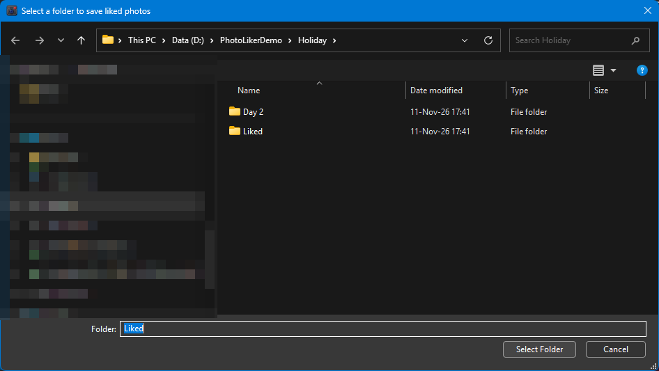
Вікно вибору папки. (Ліву панель вікна на цьому знімку розмито.)
Зміни, після яких папку переглядають заново
Зміна GoThroughSubFolders, Extensions або SortOrder одразу складає список папки наново, і фото, яке ви дивитеся, залишається вибраним, якщо воно ще є в списку.
Інші налаштування цього не потребують: нова LikedFolder використовується з наступного вподобання.
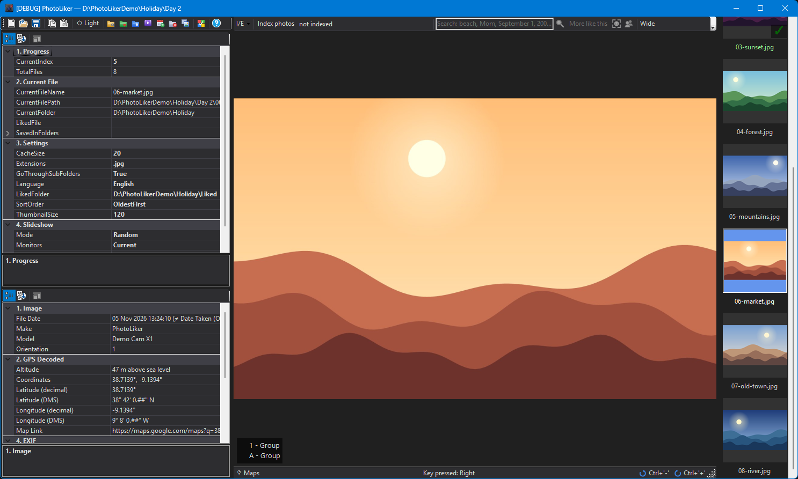
GoThroughSubFolders увімкнено: 8 фото замість 5. Заголовок вікна називає підпапку показаного фото.
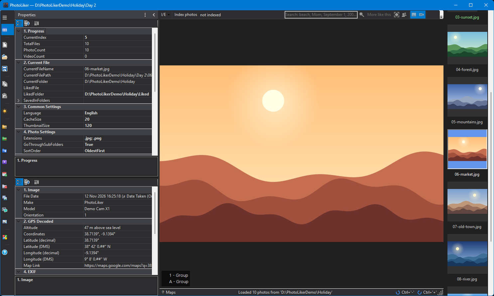
Якщо додати .png до Extensions, з’являються файли PNG.
12. Порядок фото
SortOrder визначає порядок списку, а отже, куди ведуть стрілки, Home, End і
PageDown / PageUp:
OldestFirst (за замовчуванням) і NewestFirst йдуть за датою створення кожного файлу. Ця дата надходить разом зі списком папки,
тому сортування нічого не коштує, навіть на мережевому диску.
ByName йде за назвою файлу, так, як це робить Провідник: регістр не має значення, а числа сприймаються як числа,
тому IMG_2 стоїть перед IMG_10.
Random перемішує фото. Щоразу, коли фото перелічують заново (відкриття папки ще раз, F5, пошук, створення відео), порядок новий.
None не сортує: фото йдуть у тому порядку, в якому їх віддає диск. Це найшвидше для папки з дуже великою кількістю фото.
Дата створення — це момент, коли файл з’явився на цьому диску. Фото, скопійоване з картки чи іншого диска, зазвичай має дату копіювання,
а не зйомки, тому папка, скопійована за один раз, іде в порядку копіювання. Align dates встановлює датою файлів дату зйомки фото.
Результати пошуку підпорядковуються тому самому налаштуванню, але йдуть за датою зйомки фото, яку індекс знає для кожного фото.
13. Великі папки
Скласти список папки на мережевому диску довго: що більше підпапок, то довше (6,6 секунди для 16 000 фото в 985 папках на домашньому роутері;
хвилини для великого архіву). Тому PhotoLiker зберігає список.
Вперше папку переглядають повністю, і список зберігається на цьому комп’ютері.
Далі папка відкривається одразу із збереженого списку, а поки ви вже дивитеся фото, програма у фоновому режимі перевіряє, що змінилося.
Коли перевірку закінчено, нові фото з’являються в списку, фото, яких більше немає, зникають, фото, яке ви дивитеся, залишається на місці, а рядок стану повідомляє, що знайдено.
Фото, яке інша програма змінила на місці, ця перевірка не помічає. F5 складає список папки заново.
Збережені списки — лише зручність. Їх можна видалити будь-коли; тоді папки переглядають заново.
14. EXIF і GPS
Таблиця під налаштуваннями показує те, що камера записала в показане фото (EXIF): виробника і модель, витримку, спалах, дату зйомки та інше — по групах.
Виберіть рядок — і панель під таблицею простими словами пояснить його. Рядок All Metadata у розділі Debug містить усе у вигляді тексту.
Якщо у фото є місце зйомки, воно показується координатами, висотою тощо, а рядок Map Link і посилання Maps праворуч у рядку стану
відкривають це місце в Google Maps.
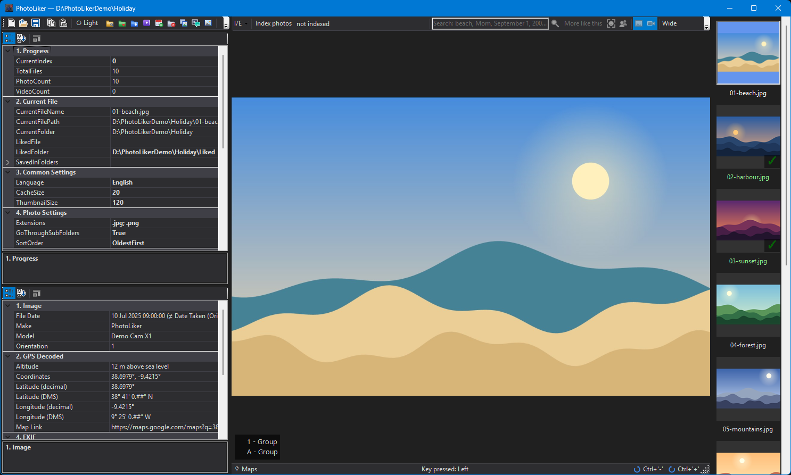
Таблиця з даними про фото і місцем зйомки.
Дати показано з місяцем словом: 14 Aug 2025 09:12:07.
Date Taken (Original) — коли знімок зроблено. Date Last Saved — коли програма востаннє зберегла фото; фото, яке пізніше повертали чи редагували,
покаже тут той день. PhotoLiker (пошук за датою, порядок списку, Align dates) керується першою.
Рядок File Date — не EXIF: це дата файлу на диску. Він закінчується на (= Date Taken (Original)), якщо файл має дату зйомки,
і на (≠ Date Taken (Original)), якщо ні (скопійований файл отримує день копіювання).
Рядки з датами можна редагувати у JPEG: Date Taken (Original), Date Time Digitized, Date Last Saved і File Date.
Впишіть дату (2015-05-01 14:30:00, 01.05.2015 14:30; дата без часу береться на полудень) або натисніть кнопку … рядка й виберіть її. Фото зберігається з нею.
Нова Date Taken (Original) дається й датам файлу; File Date змінює лише файл. Фото без дати зйомки показує там (none): впишіть дату — і воно її отримає.
Три кнопки панелі інструментів наводять лад у папці з фото. Усі вони працюють однаково: спершу дивляться і показують, що зробили б,
нічого не змінюється, доки ви не натиснете кнопку, яка це виконує, а те, що вони переміщують, переміщується, а не стирається.
Align dates
Фото, скопійоване з картки, телефона чи старого диска, має датою файлу день копіювання, а справжня дата лише всередині нього (EXIF). Align dates встановлює датами файлів
дату зйомки, щоб Провідник, інші програми й порядок списку (SortOrder іде за датою створення) збігалися з камерою.
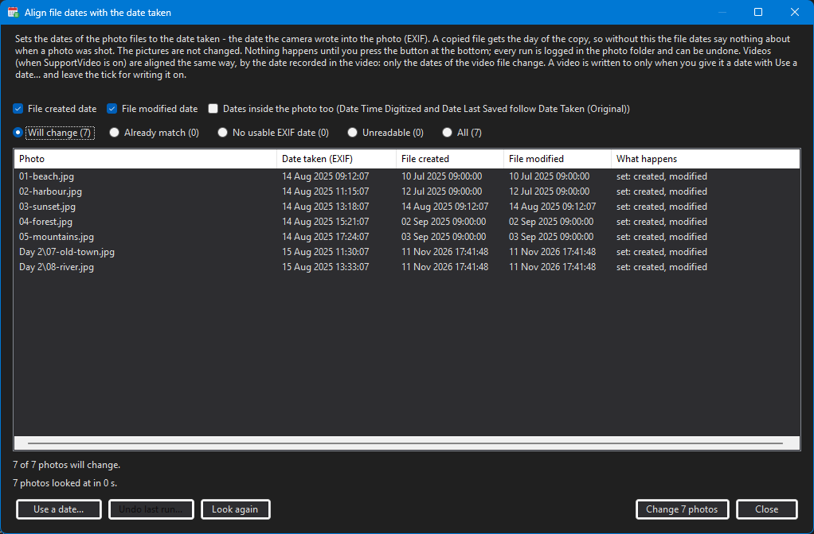
Вікно Align dates: зміняться 7 фото. У кожному рядку — дата зйомки, теперішні дати створення й зміни та те, що буде встановлено. Нічого не змінюється, доки ви не натиснете Change 7 photos.
Вікно читає початок кожного файлу і показує Will change (з датою зйомки та теперішніми датами), а також списки фото, які Already match, мають No usable EXIF date
або Unreadable. Для десятків тисяч фото це триває хвилини, і це можна зупинити.
Прапорці вибирають, що встановлювати: дату створення і дату зміни файлу (увімкнено) і, за бажанням, інші дати всередині фото (вимкнено).
Виберіть фото й натисніть Пробіл, щоб не брати його до цього запуску. Подвійне клацання на рядку відкриває фото.
Відео. Коли ввімкнено SupportVideo, відео теж у списку: дата, записана у відео, — його дата зйомки, і змінюються лише дати його файлу (відео потім не аналізується заново). У відео записують лише тоді, коли ви вказуєте йому дату через Use a date… і лишаєте позначку: дата, яку відео каже про свій запис, тоді перезаписується на місці (MP4, MOV, 3GP: заголовок фільму; AVI: поле дати від камери), розмір не змінюється, а Undo last run… повертає старі байти.
Фото без придатної дати. Камера, що втратила годинник, записує 2001-01-01; таким датам не вірять. Виберіть такі фото й натисніть Use a date…, щоб дати їм дату:
ту, що вже є у фото, дату з назви його папки (2015-05-01, 01.05.2015 Anna), дату файлу або ту, яку ви впишете. Дату також записують у фото як його
Date Taken (Original) (позначка, типово ввімкнена), навіть якщо в фото не було для неї місця: тоді файл трохи збільшується, а Undo її прибирає.
Ця сама кнопка працює для будь-яких позначених файлів, також тих, що вже мають придатну дату: обрана вами дата замінює її, тож кілька файлів можна датувати за іншим правилом, ніж решту.
Change N photos виконує зміну, а копії в папках Liked і груп отримують ті самі дати. Кожен запуск записує журнал у папці з фото, а Undo last run… повертає дати назад.
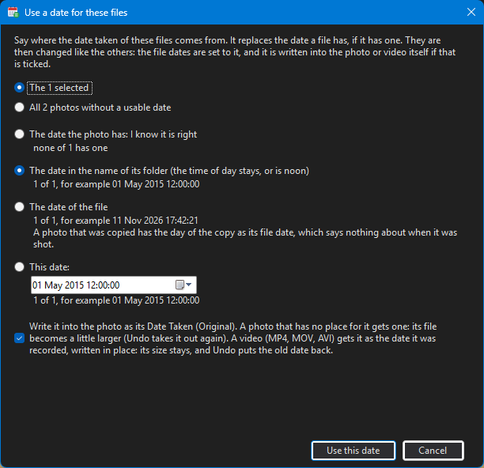
Use a date… питає, звідки взяти дату для фото без придатної, і для кожної відповіді показує, у скількох фото вона є й якою буде. Позначка внизу записує дату у фото.
Remove empty folders
Після переміщення і видалення фото лишаються порожні папки, а Windows залишає кеші мініатюр (Thumbs.db) у тих, які показувала.
Кнопка перелічує папки, де немає нічого корисного: зовсім нічого, лише файли мініатюр, або лише інші такі самі папки. Усе вже позначено; натисніть Remove N folders, щоб їх видалити.
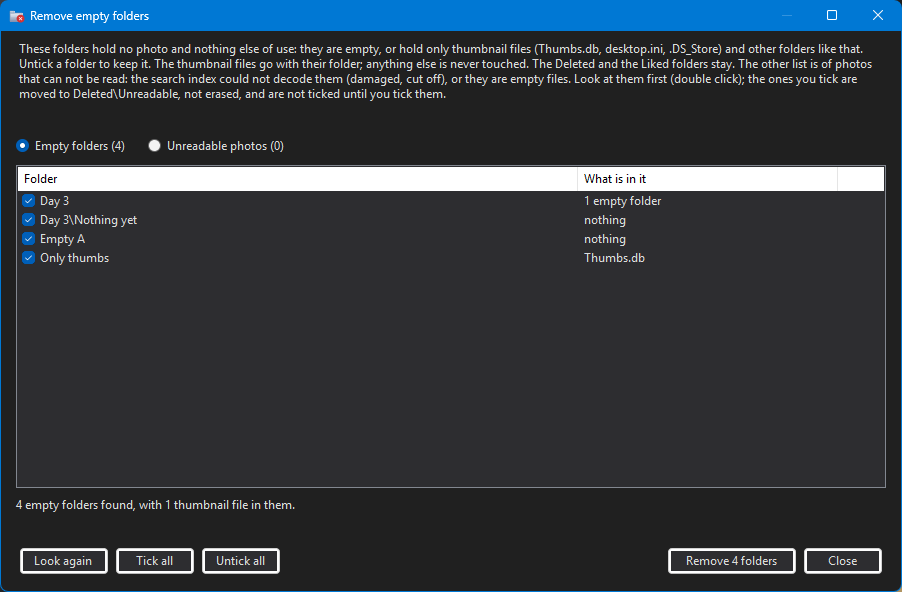
Вікно Remove empty folders: чотири папки, у кожної — що в ній є (нічого, порожня папка, Thumbs.db). Другий вибір угорі — список фото, які неможливо прочитати.
Правило суворе: будь-який інший файл зберігає свою папку і всі папки над нею. Папка Deleted, папка Liked з групами та системні й NAS-папки не чіпаються.
Саму папку з фото ніколи не видаляють.
Зняття позначки з папки знімає позначки з папок над нею; позначення папки позначає ті, що всередині. Подвійне клацання на рядку відкриває папку в Провіднику.
Фото, які неможливо прочитати. Другий список містить пошкоджені фото й порожні (0 байтів) файли фото, знайдені під час перегляду папок. Спершу в ньому нічого не позначено.
Позначте ті, що мають піти, і натисніть Move N to Deleted\Unreadable: їх буде переміщено, а не стерто.
Find duplicates
Фото копіюються: картка в папку з назвою дня, та сама картка вдруге, папка з відбракованим. Find duplicates знаходить фото, які показують точнісінько ту саму картинку в різних папках,
залишає по одному, а решту копій переміщує в Deleted\Duplicated усередині папки з фото, зберігаючи шлях, яким вони були.
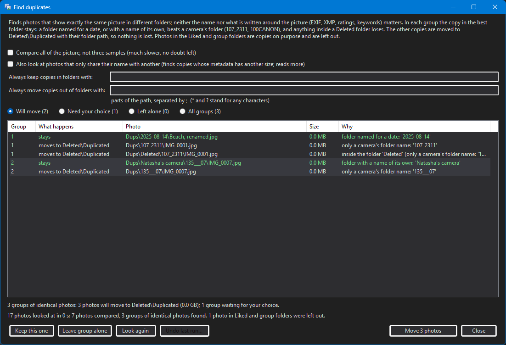
Вікно Find duplicates: три групи однакових фото. У кожній групі копія, що залишається, зелена, а ті, що переміщуються, — під нею, і кожен рядок пояснює чому. Два поля над списком змінюють правила.
Назва файлу не має значення, так само як і оцінка чи ключове слово, додані до фото пізніше: вирішує картинка. Compare all of the picture працює повільніше й не залишає сумнівів.
Яка копія залишається, вирішує папка — так, як зробили б ви самі: папка з датою в назві (2014-11-23) або з власною назвою (Crete trip) перемагає папку камери
(100NIKON, 314CANON); усе всередині Deleted чи Trash програє; файл, назва якого каже, що це копія (IMG_5407 - Copy.JPG, IMG_5407 (2).JPG), програє.
Копії, які й далі рівні, лишаються на ваш вибір і не переміщуються, доки ви не вирішите.
Кожен рядок пояснює чому. Виберіть фото й натисніть Keep this one, щоб воно залишилося, або Leave group alone. Хоча б одна копія кожної групи завжди залишається.
Подвійне клацання на рядку показує картинку.
Move N photos виконує переміщення; запуск записується в журнал, а Undo last run… повертає копії. Фото в папках Liked і груп ніколи не розглядаються: це навмисні копії.
Не наводьте лад у папці, поки її індексують для пошуку: спершу зупиніть індексацію.
Розфарбування (Colorize)
PhotoLiker додає кольори чорно-білим фото за допомогою моделі ШІ, що працює на вашому комп’ютері. Ваші фото не змінюються: кожен результат зберігається
поруч із фото як назва (colorized).jpg, з датою зйомки та іншими даними фото, і ніколи поверх іншого файлу. Уперше PhotoLiker питає, чи завантажити модель (135 МБ, один раз).
Панель над фото. Коли фото, яке ви дивитеся, чорно-біле, внизу картинки з’являється невелика панель. Її кнопки мають картинки, а не слова: наведіть курсор на кнопку, щоб побачити її назву й що вона робить.
Розфарбувати (фото, наполовину сіре, наполовину кольорове) показує фото з кольорами (близько двох секунд). Тоді кнопка має картинку сірого фото й називається Показати оригінал: вона одразу повертає сіре фото.
Сила і Тепло (від холоднішого, синішого, до теплішого, жовтішого) змінюють кольори поки ви тягнете повзунок; подвійний клік повертає повзунок на місце. Якщо сила 0,
тепло дає всьому фото один відтінок, як у сепії.
Зберегти копію (дискета) записує те, що ви бачите, як назва (colorized).jpg поруч із фото; можна зберегти кілька копій з різними налаштуваннями.
Багато фото... (стос фото) відкриває вікно нижче. ✕ закриває панель; кнопка Colorize на панелі інструментів повертає її, для будь-якого фото. Точкову ручку зліва можна тягнути, щоб посунути панель.
Кольори переходять на наступне чорно-біле фото, яке ви дивитеся, доки ви не натиснете Показати оригінал. Для фото з кольорами панелі немає.
Багато фото одразу. Кнопка Colorize, коли жодного фото не показано, або Багато фото... відкриває вікно:
Це фото розфарбовує показане фото, яким би воно не було. Чорно-білі фото зі списку переглядає кожне фото списку (папки чи результатів пошуку) і показує ті,
що не мають кольору або мають лише один відтінок (коричневий відбиток, синій), усі з позначками: зніміть позначку з тих, що мають лишитися як є. Фото, яке вже має копію, є в списку, але без позначки.
Сила кольорів: 100 — як дає модель, менше — блідіше, більше — насиченіше. Тепло зсуває їх до синього або до жовтого й червоного. Обоє починаються з тих значень, що на панелі, а те, що ви задали тут, запам’ятовується, коли вікно закривають: панель і наступне вікно починають із цього.
Colorize починає, Stop закінчує після фото, яке робиться. Одне фото займає близько двох секунд. Коли ви закриваєте вікно, папку переглядають знову, і копії вже в ній.
Кольори — здогад моделі за тим, що на знімку: шкіра, небо, трава й дерево виходять такими, якими бувають, а сукня може бути будь-якого кольору.
16. Створення відео
Кнопка Generate Video перетворює фото на відео: кожне фото показується на мить, одне за одним, за бажанням — після титульної картинки і з піснею під ними.
Нічого додатково встановлювати не треба.
Виберіть фото. Відео створюється з фото однієї папки. Найпростіше вподобати потрібні фото Пробілом (або розкласти їх по групах і робити одне відео на групу),
а потім відкрити вікно.
Натисніть Generate Video — кнопку із зображенням кіноплівки на панелі інструментів. Вікно відкривається одразу.
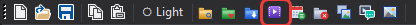
Виберіть фото і порядок.Photos from містить Current (те, що зараз показує вікно: папку або результати пошуку), Liked і кожну папку групи,
кожну з кількістю фото. Sort order задає порядок у відео: від найстаріших, від найновіших, за назвою, випадково або як у списку. Output folder змінюється разом з вибором,
тож відео опиняється поруч із фото, з яких його зроблено; Output file name — його назва.
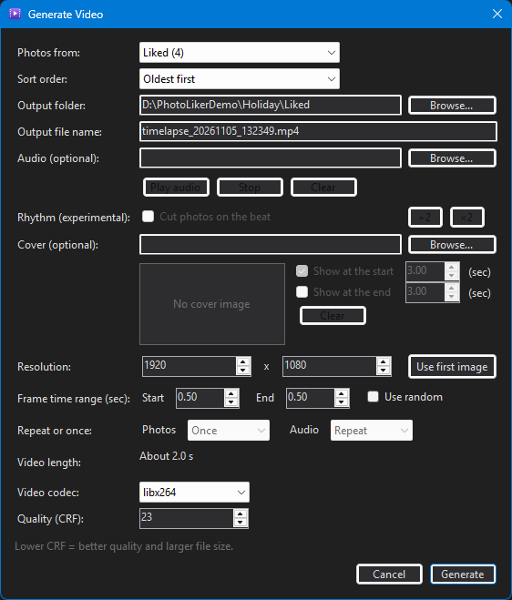
Титульна картинка (необов’язково).Cover: натисніть Browse…, виберіть картинку — і мініатюра покаже її. Show at the start (позначка стоїть спершу) робить її першою картинкою відео
незалежно від порядку, на стільки секунд, скільки вказано в полі поруч (спершу 3 секунди).
Show at the end (спершу не позначено) показує її ще раз після останнього фото, на стільки секунд, скільки вказано в полі поруч. Clear прибирає її.
Пісня (необов’язково).Audio: натисніть Browse… і виберіть файл mp3, m4a, wav, flac, ogg чи будь-який інший звуковий файл.
Play audio і Stop дають змогу послухати його заздалегідь, а його тривалість показано (Length: 3:25). Пісня, довша за відео, обривається там, де закінчується відео; коротша повторюється знову й знову.
Скільки показується кожне фото.Frame time range (sec): Start — час першого фото, End — час останнього, а фото між ними йдуть рівними кроками.
Use random дає кожному фото власний час між цими двома. Video length показує, скільки триватиме відео і що станеться з піснею, і змінюється разом з кожною вашою зміною.
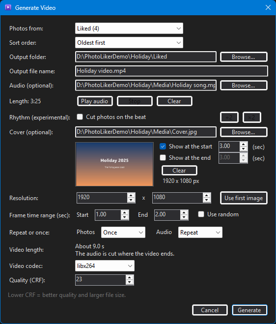
Repeat or once (потрібна пісня).Photos: Repeat показує фото знову й знову, поки не закінчиться довга пісня, замість того щоб її обривати.
Audio: Once програє коротку пісню один раз, а решта відео лишається без звуку.
Різати фото в такт (експеримент, потрібна пісня).Cut photos on the beat знаходить удари пісні й міняє фото на ударі:
кожне фото показується ціле число ударів, якнайближче до його часу. Смуги, що відкриваються внизу вікна, показують, наскільки сильно б’є звук (сині), знайдені удари
(помаранчеві) і місця зміни фото (зелені); ÷2 і ×2 беруть знайдені удари за удвічі менше чи удвічі більше, якщо темп визначено хибно.
Поки позначка стоїть, Use random і Photos: Repeat вимкнено.
Паралакс за глибиною (за бажанням). Поставте позначку Depth parallax, і кожне фото трохи рухатиметься, поки воно показане, як в
ефекті показу слайдів; обкладинка стоїть на місці. Вона не запам’ятовується: кожне вікно починає з вимкненою позначкою. Уперше PhotoLiker питає, чи завантажити модель, що визначає глибину (99 МБ, один раз). Відео тоді малюється
кадр за кадром, тож воно робиться стільки ж, скільки триває, і ще півсекунди на кожне фото. Решта працює, як і раніше.
Розмір і якість.Resolution — розмір відео (1920 × 1080 — це Full HD; Use first image бере розмір першого фото).
Video codec: libx264 грає всюди, libx265 дає менші файли, які читає не кожен програвач, і саме з нього починає вікно в теці без збережених налаштувань (потім воно повертає кодек останнього відео). Quality (CRF): що менше число, то краща якість і більший файл; звичайне число — 28 для libx265 і 23 для libx264 (однаковий вигляд), і вікно переставляє його, коли змінюють кодек, якщо ви не задали його самі.
Натисніть Generate. Вікно збільшується, щоб показати смугу прогресу й журнал. Фото, яких уже немає на диску з часу складання списку, пропускаються,
а фото, зняті телефоном у вертикальному положенні, повертаються правильно. Коли журнал напише Video generation completed, відео вже в папці призначення, а кнопка Play його відкриє. Налаштування вікна зберігаються у файлі photo-liker-video.json у папці з фото й підставляються наступного разу,
коли ви виберете цю папку.
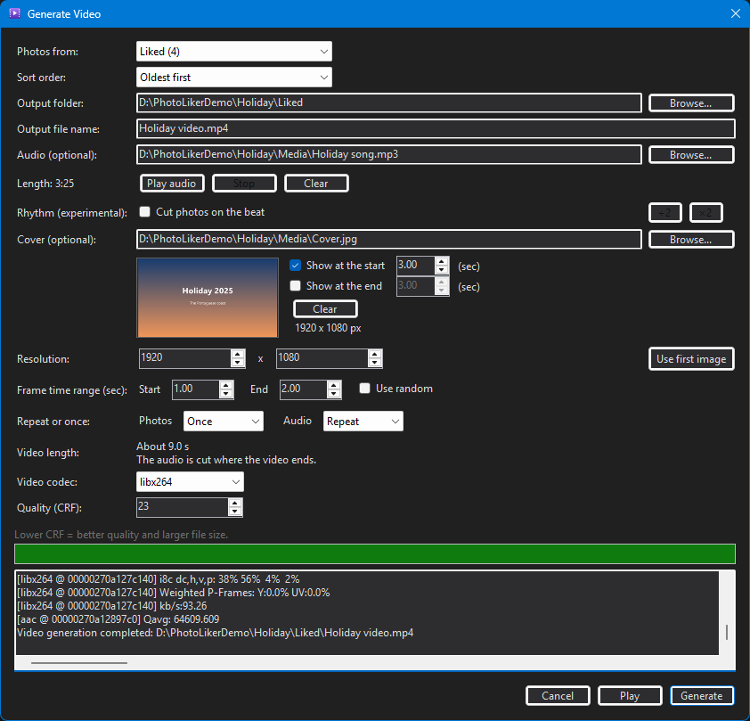
Тривалість відео показано до початку, тож можна спершу спробувати часи й порядок фото та натиснути Generate, лише коли все влаштовує.
Якщо щось не так.«No photos in this folder»: спершу вподобайте кілька фото або виберіть Current. Повідомлення, що ffmpeg не знайдено: перевстановіть
PhotoLiker (немає його папки ffmpeg) або додайте ffmpeg.exe у PATH.
17. Відео в теці
У теці старого сімейного архіву поряд із фото лежать відео: AVI з фотоапарата, MP4 і MOV з телефона. SupportVideo у таблиці налаштувань за замовчуванням увімкнено
(вимкніть, щоб тека виглядала як до відео) — і відео теки з’являться в списку разом із фото, в тому самому порядку, а також у підтеках, якщо ввімкнено
GoThroughSubFolders. Які файли вважаються відео, визначає рядок VideoExtensions; програвач відтворює майже всі існуючі формати. Тека, де лежать лише відео, працює так само:
відкрийте її як окрему теку. Зміна будь-якого з цих рядків одразу перечитує теку.
Що ви бачите
Відео показує свою картинку-постер (кадр з десятої частини відео, не далі ніж на 5-й секунді) з круглим знаком відтворення і тривалістю в кутку; його мініатюра має маленький знак відтворення.
Замість EXIF у таблиці під налаштуваннями є категорія 0. Video: Duration, Frame size, Frame rate, Video codec,
Audio, Bitrate, File size, Recorded, Date from і File dates. Recorded — це дата, яку фотоапарат чи телефон
записав у відео (а якщо її немає — дата файлу); File dates показує дати файлу поруч із нею й каже ≠ Recorded, коли вони різні: скопійований файл створюється під час копіювання,
тож він часто молодший за запис на кілька днів.
Рядок Recorded можна редагувати, як рядки з датами фото: впишіть дату (2015-05-01 14:30:00, 01.05.2015 14:30; дата без часу береться на полудень) або натисніть
кнопку … рядка й виберіть її. Дата записується у відео там, де воно її зберігає (MP4, MOV, M4V, 3GP та блок з датою в AVI з камери; розмір файлу, кожна картинка й звук лишаються як були),
а дати створення й зміни файлу стають тим самим моментом. Відео зберігає свої моменти й мовлення. Відео, в якому немає місця для дати (Matroska, MPEG, WMV), отримує лише дати файлу,
і рядок стану про це каже. Скасування для однієї правки немає: впишіть стару дату назад (інструмент Align dates може скасувати цілий запуск).
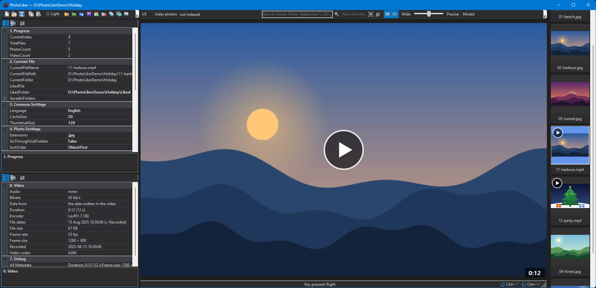
Відео: постер із круглим знаком відтворення й тривалістю в кутку, мініатюра з маленьким знаком відтворення в стрічці праворуч і категорія 0. Video в таблиці ліворуч.
Відтворення
Enter або клацання по постеру кладе програвач поверх картинки. Під ним: відтворити / пауза, де ви зараз (0:12 / 1:17), повзунок, щоб перейти будь-куди (клацніть або потягніть),
поле Go to («Перейти до»), де вводять час і натискають Enter (83, 1:23, 1:02:03 або 1m23s), кнопка вимкнення звуку та гучність.
Клацання по картинці ставить на паузу й відновлює. Shift+← / → — на 5 секунд, Ctrl+← / → — на 30 секунд,
Ctrl+↑ / ↓ змінюють гучність, Esc повертає до постера. Перехід до іншого елемента зупиняє відео.
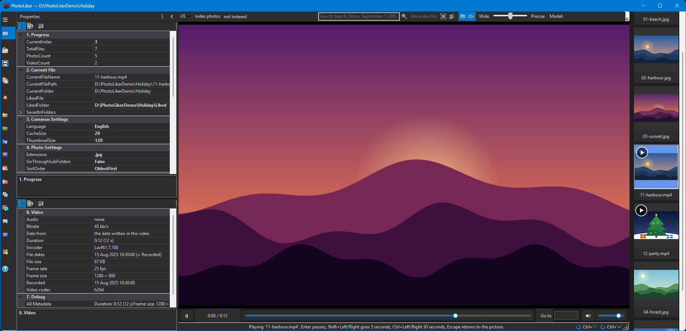
Програвач: відтворити / пауза, де ви зараз (0:08 / 0:12), повзунок, поле Go to, кнопка вимкнення звуку й гучність. Рядок стану нагадує про клавіші.
Перший запуск програвача після встановлення може тривати десять секунд і більше, поки антивірус переглядає його файли; він стартує у фоні, щойно показано відео, а панель пише
Запуск відеопрогравача..., поки той не готовий. Якщо він узагалі не запускається, відео відкривається в програмі, якою Windows відтворює такі файли.
Пошук по відео
Коли ввімкнено SupportVideo, «Оновити індекс» проходить і по відео — після фото, з тією самою моделлю та тією самою кнопкою зупинки. З кожного відео
кожні дві секунди береться кадр, і модель на нього дивиться; кадр, що вже не схожий на останній збережений, стає моментом відео (приблизно кожен третій, зі зменшеною картинкою й обличчями
на ній). Тоді поле пошуку шукає разом по фото й відео: слова (кіт), людину (Мама), дату (вересень 2009) або все разом, а результат — один список, кращі збіги першими. Відео в ньому
стоїть один раз, а переглядач показує, де саме воно збігається: під картинкою — стрічка моментів відео, знайдені пошуком позначено помаранчевим, а на повзунку є помаранчеві мітки на тих самих місцях.
Enter (або клацання) відтворює від найкращого місця, клацання по картинці стрічки переходить туди, а . / , переходять до наступного / попереднього знайденого місця.
Дві кнопки на смузі пошуку, картинка (Фото) і відеокамера (Відео) (є, поки ввімкнено SupportVideo; наведіть вказівник, щоб побачити назву), визначають, де шукати: за замовчуванням обидва ввімкнено,
вимкнене Фото шукає лише у відео (кіт лише серед відео), вимкнене Відео — лише серед фото. Останній ввімкнений вимкнути не можна, вибір зберігається для папки, а показаний
пошук виконується знову, щойно він змінюється. Повзунок точності працює й для відео. Людину знаходять за обличчями в моментах — за прикладами з названих вами фото.
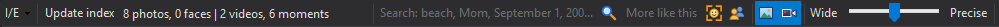
Смуга пошуку з увімкненим SupportVideo: в індексі 8 фото і 2 відео з 6 моментами, а кнопки Photos і Videos стоять поряд зі значками облич і людей.
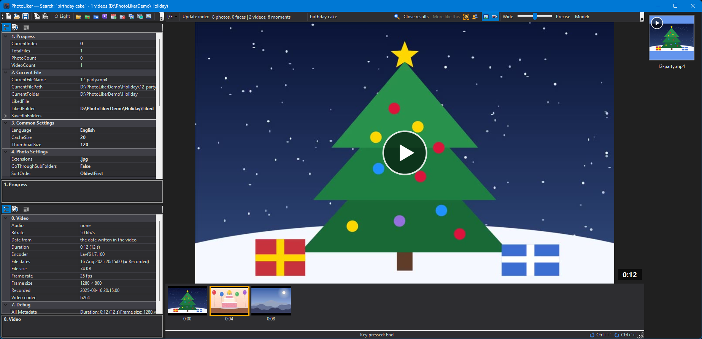
Результат пошуку birthday cake: одне відео. Під картинкою — стрічка його моментів, а той, що збігається найкраще, позначено помаранчевим.
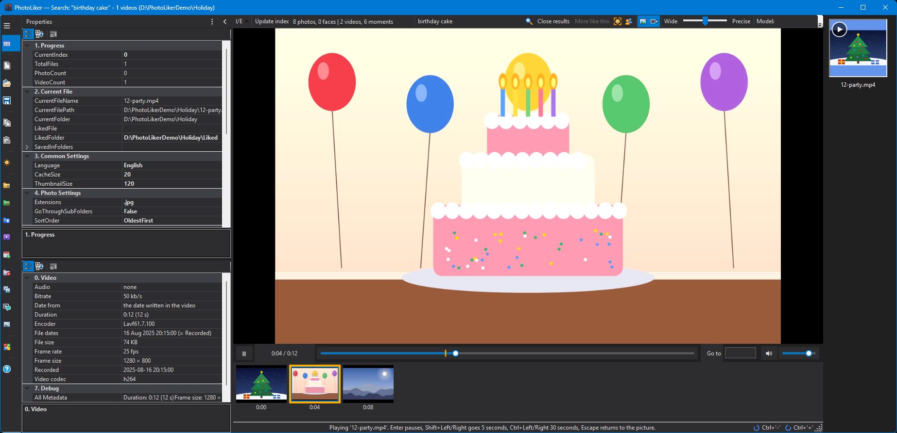
Enter відтворює відео від цього місця (0:04 / 0:12); на повзунку там помаранчева мітка.
На кліпах 640 × 480 з фотоапарата Canon 144 секунди відео індексувалися 19 секунд разом з обличчями; бібліотека на 3 години — близько 20 хвилин, плюс час читання з мережевого ресурсу.
Що кажуть у відео
Увімкніть VideoSpeech (за замовчуванням вимкнено), і «Оновити індекс» перетворить на текст ще й те, що кажуть у відео, — на вашому комп’ютері, моделлю Whisper small
(465 МБ, завантажується один раз, після запитання). Це займає близько третини тривалості мовлення (3 години відео — близько години), і робота продовжується з місця зупинки. Слово, яке ви вводите, шукається
і в сказаному — у будь-якій формі (лошадка знаходить лошадку), а відео, де воно сказане, стоїть перед тими, що лише виглядають доречно. Слова показуються рядком під програвачем, поки відео
відтворюється. Текст — припущення моделі: добре з мовленням дорослих, погано з дитячим і з шумом; задайте SpeechLanguage (ru, uk, en), якщо в родині
говорять однією мовою: коли модель сама визначає мову (auto), вона іноді приймає коротке чи шумне відео за норвезьку, японську чи іншу мову й пише нісенітницю. Коли мову задано,
«Оновити індекс» прочитає знову й відео, які були прочитані як інша мова. Спершу воно запитає, скільки це відео й яка їхня тривалість, бо це замінює їхній текст: «Ні» читає лише
відео, які ще не прочитано, а зупинена робота продовжується з місця зупинки. Нічого не залишає комп’ютер.
Які відео знайдено за мовленням. Відео, знайдене в мовленні, має на мініатюрі у списку збоку бірюзову бульбашку мовлення (наведіть вказівник, щоб прочитати слова), а рядок стану
каже, скільки відео знайдено так. У переглядачі місця, знайдені в мовленні, мають бульбашку на стрічці й бірюзову мітку на повзунку, а те, що знайшли картинки, лишається помаранчевим; наведіть вказівник на
момент стрічки чи місце на повзунку, щоб прочитати, що там кажуть. Рядок під програвачем показується лише поки хтось говорить і лише для відео, мовлення яких уже прочитано: решту дочитає
«Оновити індекс», папка за папкою.
Більше ніж одна модель. Текст зберігається для кожної моделі мовлення окремо: зміна SpeechModel ніколи не замінює те, що написала інша модель. «Оновити індекс» з новою
моделлю читає кожне відео знову для неї, а повернення до старої моделі нічого не коштує, її текст лишився. Рядок під програвачем і субтитри показу слайдів показують слова моделі з SpeechModel, якщо
вона щось почула у відео, інакше моделі, що почула найбільше; пошук за словами дивиться лише на задану модель.
Таблиця мовлення
Кнопка Video speech на панелі інструментів (кадр відео з хмаринкою мовлення; вона є, поки ввімкнено SupportVideo) відкриває таблицю всіх відео теки, які знає програма
(також із підтек, яких список не показує): шлях до відео від теки, тривалість, коли його знято (дата й час), стан (З мовленням, Нічого не почуто, Ще не прочитано,
Без звуку або помилка), мова, якою його прочитано, кількість моментів і те, що в ньому кажуть. Клацання на назві стовпця сортує за ним, повторне — обертає порядок
(Знято: спочатку найстаріші, потім найновіші; відео без дати, якій можна вірити, лишається порожнім і завжди останнє). Стовпець Моделі перелічує моделі, які чули відео, кожну зі
скількома відрізками мовлення вона знайшла (base (2), small (1) ✓); галочка позначає модель, чиї слова є субтитрами відео: ту, що задано в SpeechModel, якщо вона щось почула у відео,
інакше ту, що почула найбільше. Поле Модель вибирає модель, якої є таблиця (її текст і стан; чого модель не чула, там Ще не прочитано), і «Прочитати знову...» працює нею. Пункт
контекстного меню Прочитати знову моделлю перемикає таблицю на вибрану модель і питає про мову, тож одне відео можна спробувати іншою моделлю; замінюється лише текст цієї моделі для нього, тексти
інших моделей лишаються. Поле Знайти залишає відео, у шляху
або словах яких є введене, а список поруч залишає один стан.
Виберіть відео — під таблицею з’являться його моменти (маленькі кадри, з хмаринкою на тих, де щось кажуть; наведіть вказівник, щоб прочитати слова) і слова з часом. Клацання на моменті виділяє слова, що
звучать там. Подвійне клацання (або Enter) відкриває відео в програмі, яку для нього призначено в Windows. Контекстне меню має
Відкрити, Показати в Провіднику і Прочитати знову іншою мовою....
Прочитати знову... питає мову (одну з 99, які знає модель, або auto; першою пропонується та, що задана в SpeechLanguage) і читає вибрані відео знову;
Прочитати всі знову... робить це для кожного відео зі звуком. Це займає приблизно третину тривалості відео, тож уся бібліотека читається годинами; смужка показує, скільки зроблено, а
Зупинити зупиняє. Текст відео замінюється, коли новий текст готовий, тож зупинений запуск залишає решту як було. Мова зберігається такою, як ви вибрали: «Оновити індекс»
з тією самою мовою в SpeechLanguage не читатиме їх знову (з іншою — спершу запитає). Поки працює «Оновити індекс», відео знову читати не можна.
Експорт в Excel... зберігає кожне відео, також ті, про які нічого не відомо, у файл .xlsx з двома аркушами: рядок для кожного відео (шлях, тривалість, знято, стан, мова,
моменти та їхній час, увесь текст) і рядок для кожного відрізка мовлення (шлях, початок, кінець, текст) — на цьому аркуші зручно фільтрувати й шукати. Клітинка Excel вміщує 32 000 символів, тож довший текст
там обрізається. Файл, який відкрито в Excel, не замінюється: вікно про це скаже.
Збереження кадру з відео
Ctrl+S зберігає кадр, який зараз показує відео (перший, якщо воно не відтворюється), як фото в теці Liked — у повному розмірі, з назвою за відео та місцем
(MVI_4069 1m23s.jpg) і з датою, коли відео було записано в цьому місці, як датою зйомки.
Що працює з відео, а що ні
Space вподобує його, клавіша групи розкладає, Delete переносить у теку Deleted (відео, що відтворюється, спершу звільняється), Ctrl+C копіює файл — усе як із фото.
Показ слайдів (з увімкненим UseVideo) і Align dates беруть відео з собою; повороти, дублікати, «Схожі на це» й «Створення відео» поки що працюють лише з фото: відео з них виключено.
Те, що PhotoLiker прочитав із відео (розмір, тривалість, кодек, дати), і його постер зберігаються на цьому комп’ютері в окремому каталозі поряд з індексом фото, щоб тека з відео на мережевому
ресурсі не читалася знову за кожного візиту. Його можна видалити будь-коли; це коштуватиме лише часу на повторне читання відео. Програвач — рушій VLC. Його немає в установнику (так установник займає 32 МБ замість 55 МБ):
коли SupportVideo вмикають уперше або вперше відтворюють відео, програма каже, який він завбільшки (близько 40 МБ) і звідки береться, та питає. OK завантажує його один раз, із ходом
у рядку стану, і він залишається на вашому комп’ютері, у %LocalAppData%\PhotoLiker\libvlc; більше нічого не змінюється. Якщо відмовитися, відео відкриваються в програмі, якою Windows їх відтворює, а питати знову
почнуть, коли SupportVideo вимкнуть і ввімкнуть. Коли завантаження почало ввімкнення SupportVideo, після нього список папки складається знову (як це робить F5). Його ліцензія та місце, де взяти початковий код, — у теці libvlc поряд із програмою.
18. Темна і світла тема
Кнопка теми на панелі інструментів перемикає між двома темами. Папка, яку відкрито вперше, темна; вибір запам’ятовується для кожної папки. (Мова програми вибирається в таблиці налаштувань, див.
Мова програми.)
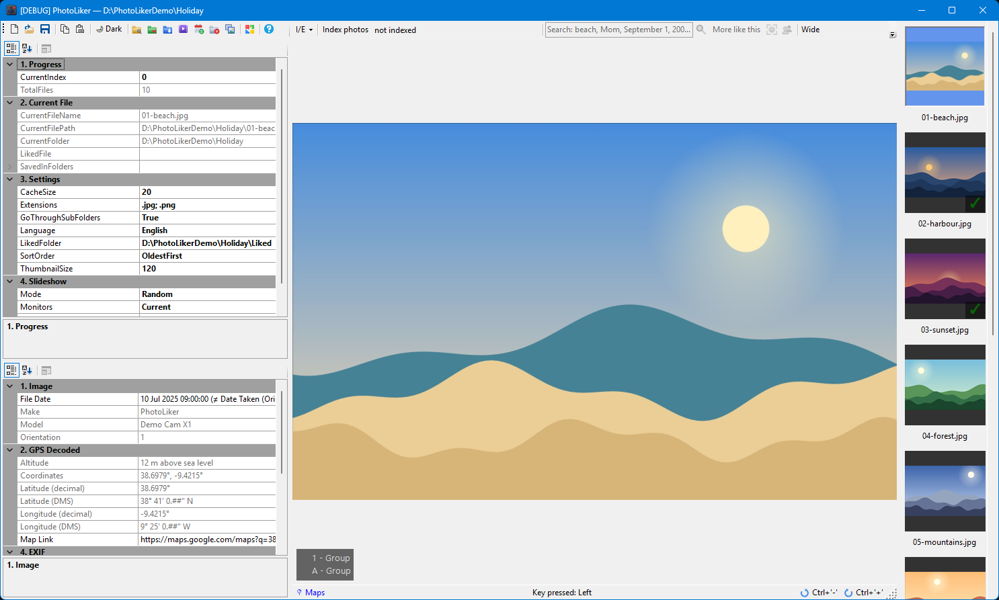
Світла тема.
19. Що зберігає PhotoLiker і де
У кожній папці з фото:photo-liker-config.json — налаштування цієї папки (тема, положення вікна, типи файлів, фото, на якому ви зупинилися), тож кожна папка
відкривається так, як ви її залишили, на будь-якому комп’ютері. Шляхи в ньому відносні, тому папку можна перенести чи передати. photo-liker-people.json містить імена, які ви дали обличчям, а photo-liker-groups.json — групи, на які ви розклали людей (копія груп цього комп’ютера, щоб вони подорожували разом
із фото; коли ви відкриваєте папку, чинною є та, що збережена пізніше).
Це єдині файли, які PhotoLiker додає до вашої папки, окрім журналів Align dates і Find duplicates.
Папка Liked (за замовчуванням усередині папки з фото) і її папки груп: ваші копії.
Папка Deleted усередині папки з фото: фото, які ви прибрали, а також переміщені дублікати й фото, які не читаються.
На цьому комп’ютері, у %LocalAppData%\PhotoLiker: збережені списки папок, індекс пошуку, моделі ШІ, люди з усіх ваших папок і групи, на які ви їх розклали, остання відкрита папка і мова програми.
Усе, окрім моделей, можна створити знову, тож видалення коштує лише часу на повторне створення.
20. Вікно «About» і цей посібник
Кнопка Help (знак питання) в кінці панелі інструментів або клавіша F1 відкриває вікно About: версія й дата збірки програми, клавіші та рухи миші (список із розділу
Клавіатура і миша) і дві кнопки, які відкривають цей посібник англійською чи українською.
Для цього вікно не обов’язкове: у головному вікні F3 відкриває англійський посібник, а F2 — український.
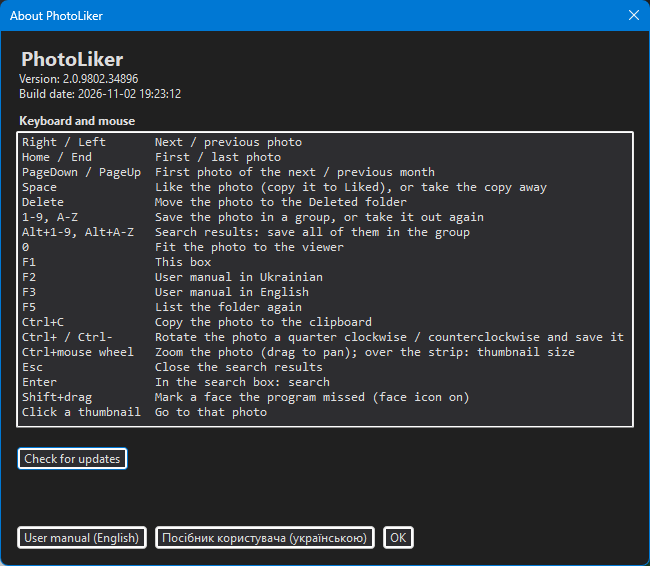
Вікно About.
Кнопка Check for updates питає GitHub, чи є новіша версія PhotoLiker, ніж ваша. Вона питає лише тоді, коли ви її натиснете: у фоновому режимі
нічого не перевіряється. Якщо новіша версія є, Install and restart робить решту просто у вікні: завантажує установник (зі смугою поступу), перевіряє його, закриває PhotoLiker,
тихо запускає установник поверх встановленої копії (видно лише його невеличке вікно поступу) і знову запускає PhotoLiker. Ваші налаштування, вподобання та індекси пошуку залишаються.
Release page відкриває сторінку цієї версії, де сказано, що змінилося. Копію, яку розпакували з zip або запустили з коду, установник замінити не може: він встановлює
PhotoLiker для вас як другу копію і запускає саме її, тож лише тут Install спершу питає. Копія, з якої ви почали, лишається на місці.